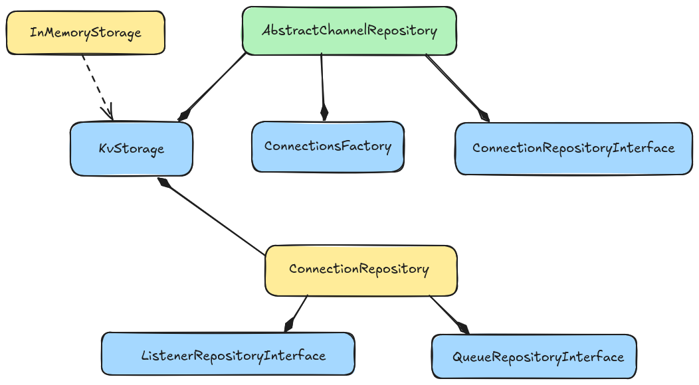

Persistence#
{kind=link}
Base classes for channels and connections repositories. The main idea is that a repository relies on some KV storage engine abstraction, and uses it for storing its own configuration, and its correspondant composites repositories to build final objects to return.
To build a persistence layer is needed to provide an implementation to some of above abstractions, and use them to build a custom ChannelRepository
Here is a possible Redis implementation
Suggestions
If your implementation uses objects that are directly persistable by storage engine you are using, cleanest manner of implementing your custom layer is to simply
implement a KvStorage and delegate to it all repositories ones.
Otherwise you should implement a dump strategy inside repositories themselves. An example is RedisQueues persistence, as Redis client used is not serializable by pickle.
Base repositories#
- class KvStorage#
Bases:
ABCRepresents a Key Value storage engine. Provides functionalities do load, persist and find by key prefix
- class AbstractChannelRepository#
Bases:
ChannelRepositoryInterface,ABCAbstract base class for channel repositories.
Builds channels before return them using injected repositories
- __init__(storage, connections_repository, connections_factory)#
- Parameters:
storage (KvStorage)
connections_repository (ConnectionRepositoryInterface)
connections_factory (ConnectionsFactory)
- property connections_factory: ConnectionsFactory#
The connections factory that will be injected into concrete channel instances.
- property connections_repository: ConnectionRepositoryInterface#
Repository to be used to persist connections.
- load_all()#
Loads all channels
- Return type:
- persist(channel)#
Persists a channel
- Parameters:
channel (AbstractChannel)
- class ConnectionRepository#
Bases:
ConnectionRepositoryInterfaceConcrete Connection Repository
Relies on
KvStorageabstraction for final writes of connections data, and on correspondant repositories for related objects ones.- __init__(storage, listeners_repository, queues_repository)#
- Parameters:
storage (KvStorage)
listeners_repository (ListenerRepositoryInterface)
queues_repository (QueueRepositoryInterface)
- property queues_repository: QueueRepositoryInterface#
- property listeners_repository: ListenerRepositoryInterface#
- load_all(channel_id)#
Loads all connections managed by a given channel
- Parameters:
channel_id (str)
- Return type:
- load_one(channel_id, connection_id)#
Loads a connection given the connection and channel id it belongs to.
- Parameters:
- Return type:
- persist(channel_id, connection)#
Persists a connection and assign it to a channel.
- Parameters:
channel_id (str)
connection (Connection)
Interoperability#
- class QueueRepositoryInterface#
Bases:
ABC- abstract load(connection_id)#
Loads a queue given the connection id it belongs to.
- abstract persist(connection_id, queue)#
Persists queue and assign to connection.
- class ListenerRepositoryInterface#
Bases:
ABC- abstract load(connection_id)#
Loads a listener given the connection id it belongs to.
- Parameters:
connection_id (str)
- Return type:
- abstract persist(connection_id, listener)#
Persists listener and assign to connection.
- Parameters:
connection_id (str)
listener (MessageQueueListener)
- class ConnectionRepositoryInterface#
Bases:
ABC- abstract property queues_repository: QueueRepositoryInterface#
- abstract property listeners_repository: ListenerRepositoryInterface#
- abstract load_all(channel_id)#
Loads all connections managed by a given channel
- Parameters:
channel_id (str)
- Return type:
- abstract load_one(channel_id, connection_id)#
Loads a connection given the connection and channel id it belongs to.
- Parameters:
- Return type:
- abstract persist(channel_id, connection)#
Persists a connection and assign it to a channel.
- Parameters:
channel_id (str)
connection (Connection)
- class ChannelRepositoryInterface#
Bases:
ABC- abstract property connections_factory: ConnectionsFactory#
The connections factory that will be injected into concrete channel instances.
- abstract property connections_repository: ConnectionRepositoryInterface#
Repository to be used to persist connections.
- abstract load_all()#
Loads all channels
- Return type:
- abstract load_one(channel_id)#
Loads a channel given its it
- Parameters:
channel_id (str)
- Return type:
- abstract persist(channel)#
Persists a channel
- Parameters:
channel (AbstractChannel)